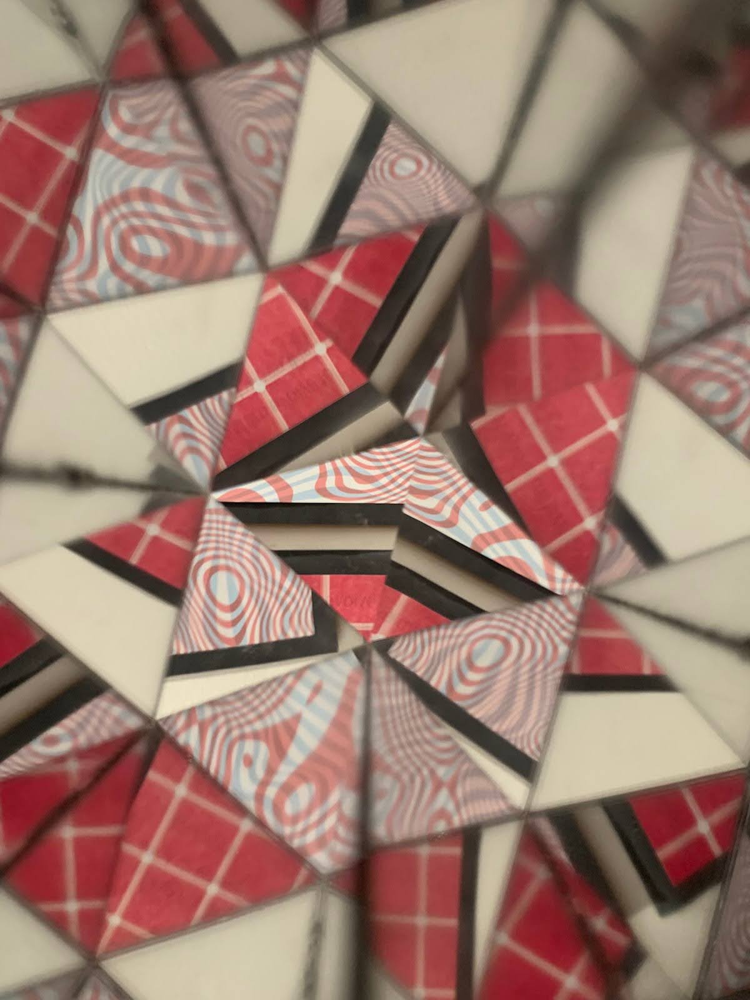

Shifting Perspectives
Kaitlynn Gray
Course: Digital Fabrication in Fine Art
Mediums Used: Laser cut wood, laser-cut acrylic, laser cut mirrors, paint, paper, hot glue
Description
I created this piece to encourage myself to consider perspectives that were different from my own. I researched the impacts of shifting perspectives and created a kaleidoscope, periscope, and red reveal to create optical illusions. With these, I could literally view the world in interesting new ways, and guide the audience to do so as well.
Pictures
The (not so simple) Tower
{kind=link}
The piece begins with black spires constructed from laser-cut wood painted black. In the background are two patterns framed in black, making the piece feel like a standard exhibit in an art museum.
However, the towers are more than they seem – one tower hides a kaleidoscope, another a red reveal, and another a deconstructed periscope!
Transforming Interactions
{kind=link}
The black spires can be pressed together to create new shapes. Audiences are encouraged to manipulate the tower pieces and look through them to see their world transformed.
The pieces are designed to allow audiences to combine the red reveal, kaleidoscope, and periscope in various ways to layer their effects!
Through the Red Reveal
{kind=link}
A look through the red reveal at one of the pattern pieces on the wall. This reveals a message about how human visual systems evolved to connect to the themes of optical illusions and perspective shifting.
The text reads, “Why did your visual system evolve to be better at detecting light when it is surrounded by darkness? This makes edges stand out so that you can quickly identify objects in your surroundings – an important survival skill”
Through the Kaleidoscope
{kind=link}
Looking through the kaleidoscope at another of the patterned pieces shatters its initial look and allows the audience to spin and break the pattern in new ways.
Through the Periscope
{kind=link}
A look through the periscope! We can see the patterned piece above through the viewing port. Since the pieces are like building blocks, audiences can rotate one or both of the pieces with the mirror inside (the L-shaped pieces) to see in different directions, even to see behind themselves!